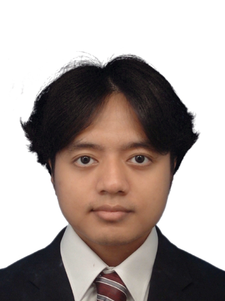

Started with curiosity, and passion followed.

I am currently studying International Management at Ritsumeikan Asia Pacific University while also pursuing a B.Sc. in Computer Science at the University of the People to complement my business studies and further explore my interest in technology.
My interest in programming began with Harvard's CS50P course, which encouraged me to dive deeper into computer science and software development. Since then, I have continued learning through coursework and personal projects, particularly in Python and web development.
I am eager to learn more about both the business and technology worlds and hope to play a meaningful role at the intersection of the two fields. Growing up in Yangon, Myanmar, and studying across different educational systems and languages has also taught me how to adapt quickly to new environments and continuously learn from unfamiliar experiences.